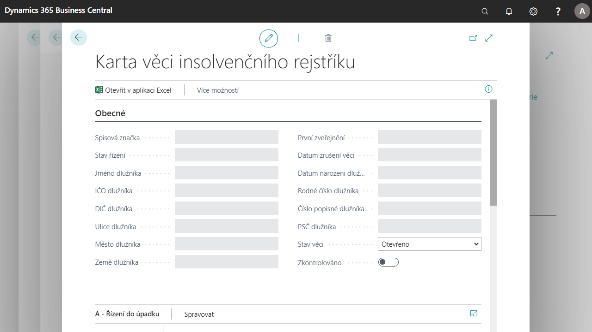

Insolvenční rejstřík
Add-on Insolvenční rejstřík slouží k evidenci záznamů stahovaných z https://isir.justice.cz o insolvenčním řízení společností.
Je nástrojem pro další akce s kontakty společnosti, které jsou v insolvenčním řízení, např. při zadávání prodejních dokladů, jejich účtování (dodání, fakturace). Poskytuje vybraným osobám společnosti aktuální informace o nových záznamech v insolvenčním rejstříku.

Viz také